Plan preferences
The settings for the whole plan, including camera, exposure model, guiding, refocus and cues. Open them with Plan preferences... in the planner.
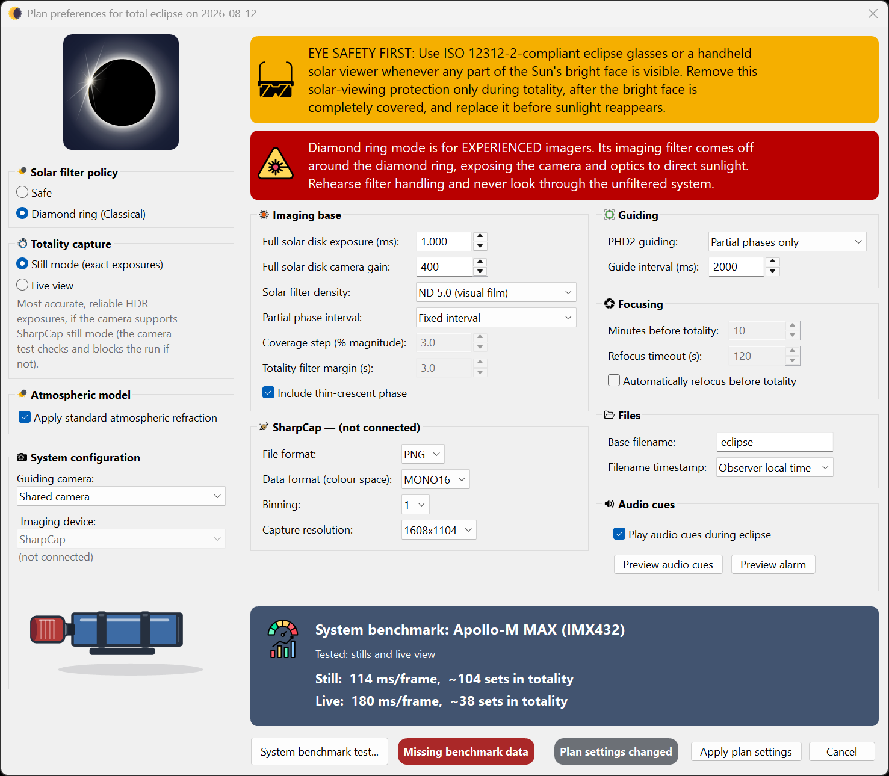
Preferences are grouped into sections: Solar filter policy, the central-phase capture group, Atmospheric model, System configuration, Imaging base, the SharpCap camera settings, Guiding, Files, Focusing and Audio cues. This page walks through the ones that matter most; individual phase recipes live in the Phase editor.
Solar filter policy (eclipse mode)
In the Solar filter policy group, choose the eclipse mode: Safe (the default) or Diamond ring (Classical). This changes the filter removal and replacement timing, the C2/C3 exposure brackets and the cues. Choose the mode whose filter procedure you understand and have rehearsed. Full explanation on the Safety & eclipse modes page. A standing safety warning is shown here, and a second amber caution appears if your guiding would run through the unfiltered phases.
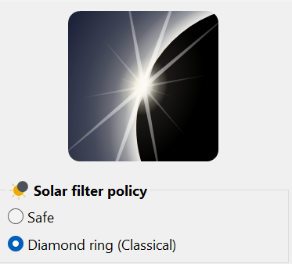
Atmospheric model
The Atmospheric model group contains one setting: Apply standard atmospheric refraction. It is enabled by default. When selected, HelioMaker includes atmospheric refraction in the calculated contact times using fixed standard conditions of 10 °C and 1010 hPa. When cleared, the contact times are geometric and do not include atmospheric refraction.
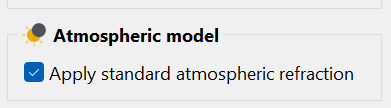
There are no separate temperature or pressure controls. The effect is usually negligible while the Sun is well above the horizon, but it can become significant for an eclipse close to the horizon. Changing the checkbox recalculates the contact times and the plan windows derived from them, so make this choice before final approval and repeat the rehearsal after changing it.
System configuration
The System configuration group selects the imaging device. SharpCap uses the camera currently open in SharpCap Pro. The group also contains the important Guiding camera: choice:
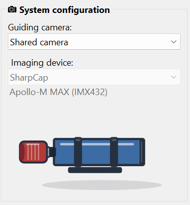
- Shared camera (simple full solar disk setup): one scope and one camera do both imaging and guiding (PHD2 uses the Virtual Planetary Camera fed by HelioMaker). Simplest rig, one filter to manage. The entire solar disk must fit comfortably inside the main camera frame because eclipse automation uses the Sun detector in crescent and full solar disk modes. HelioMaker guides through the ordinary partial phases and pauses guiding through the C2 and C3 contact windows and totality. As the photospheric limb becomes bright enough for reliable detection after C3, it automatically recenters the Sun to its locked position. The mount tracks without guide corrections for those few minutes.
- Physical guiding camera: a separate guide scope with its own camera, selected in PHD2. Choose this when you need guiding to run through totality or when the main camera shows only part of the solar disk at high magnification. It needs its own solar filter, removed and replaced with the main one if guiding continues through totality. See Gear & rig requirements.
SharpCap camera settings
If SharpCap isn't connected you'll see "SharpCap not connected. Camera settings can't be read or applied." and settings can't be read.
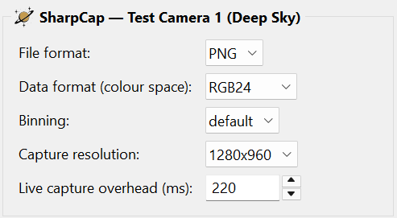
- Capture format
- FITS, PNG or TIFF. FITS preserves the raw data for later processing.
- Binning / Capture resolution
- The Capture resolution: (capture area) is important because it fixes the frame size the run will use, which in turn drives the data rate for each frame and the disk estimate. Choose it deliberately; the preflight checklist and the system benchmark test measure against it.
The System benchmark test... measures live-view capture overhead automatically and uses it when HelioMaker calculates safe shot spacing. There is no manual overhead setting to estimate or tune.
The selected SharpCap camera is part of the saved plan. Preflight and final arming block if the camera configured in HelioMaker, the plan camera and the camera currently open in SharpCap do not agree. This camera identity check cannot be bypassed with an ignore-warnings choice.
If physical testing requires a change, enter it here or in the Phase editor, save the revised plan, repeat the System benchmark test when the camera format, colour space, binning or capture area changed, and rehearse again. Avoid last minute tuning after preflight begins.
Capture file naming and location
The Files group is separate from the SharpCap camera settings. Set Base filename: and choose whether Filename timestamp: uses Observer local time or UTC (prefix with utc).
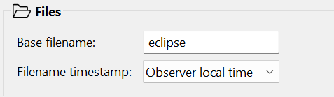
Imaging base: the exposure model
HelioMaker anchors the whole exposure plan to one filtered reference exposure and gain, together with the solar filter density. It combines these physical inputs with Fred Espenak's eclipse exposure recommendations to derive the starting recipe for every phase. These are the most important imaging parameters in the plan. Set:
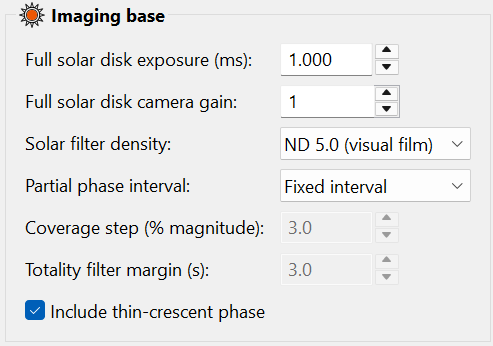
- Full solar disk exposure (ms): & Full solar disk camera gain:
- Your correct exposure and gain for the filtered full solar disk with the physical eclipse rig. Adjust them in SharpCap until the photosphere is bright and detailed without clipping, then record the pair and enter it here. Do this on an ordinary sunny day before the eclipse, or no later than the initial partial phase before automated imaging starts. HelioMaker applies this reference gain to every phase when it derives the plan.
- Solar filter density:
- Select the effective optical density of all attenuation in front of the
sensor when you measured the full solar disk exposure. The choices are
ND 5.9 (visual film + 3 stops),
ND 5.6 (visual film + 2 stops),
ND 5.3 (visual film + 1 stop),
ND 5.0 (visual film), ND 4.0 and
ND 3.8 (photo film).
HelioMaker combines this value with the filtered full-disk exposure to derive the C2/C3 and totality
exposure defaults.
Always use a certified front-mounted solar filter. Ordinary photographic ND filters are not safe solar filters on their own and must never face the Sun directly. If used for additional attenuation, they must sit farther back in the optical train, behind the certified solar filter. Add their optical densities to select the effective total. For example, ND 5.0 plus a one-stop ND 0.3 filter is ND 5.3.
Add attenuation only when the shortest practical camera exposure still overexposes the filtered disk. Going below approximately 1 ms increasingly exposes the result to read noise. Measure and enter the reference exposure using the same complete filter stack that will be used for the eclipse.
- Partial phase interval
- Fixed interval (a constant time between shots, in seconds) or Uniform coverage (shots spaced to sample the changing crescent evenly, set by Coverage step (% magnitude):). The choice applies to partial ingress and egress, and on Apply it also sets the pre-eclipse and post-eclipse intervals to match, so the whole outer eclipse is paced one way.
- Annularity interval (s): / Central interval (s): (annular and partial eclipses)
- The time between shots through annularity, or through the central phase of a partial eclipse. Unlike totality, these phases are long and their brightness barely changes, so shooting flat out would fill the disk with thousands of near-identical frames for no gain. Pick a spacing you actually want to keep. It occupies the same slot in the dialog that Totality filter margin uses on a total eclipse, because only one of the two can ever apply. To change how wide the central phase is, rather than how often it shoots, select its row in the Phase editor and use Start before (s): and End after (s): there.
- Totality filter margin (s): (total eclipses)
- Safe mode only. This parameter creates a deliberate buffer at both ends of totality. HelioMaker sets filter removal to C2 plus the selected margin and filter replacement to C3 minus the same margin. It does not change the calculated C2 or C3 contact times; it shortens the interval during which the telescope is unfiltered. The buffer lets you wait until after the predicted C2 before removing the filter and begin replacing it early enough to finish before the photosphere is predicted to return at C3. Choose a value that allows for uncertainty in the predicted contact timing and for handling the physical filter. A larger value provides more buffer but reduces unfiltered imaging time. The timeline, run monitor and audio cues use these filter change instants. The setting also influences the default Safe mode phase layout: when you accept recipe regeneration, HelioMaker sets the C2 diamond trail and C3 diamond lead to the rounded margin plus two seconds, leaving a small overlap beyond each filter transition. Those phase boundaries remain separately editable in the Phase editor. In Diamond ring (Classical) mode this setting has no effect; the C2 and C3 diamond phase windows determine the filter change points instead.
- Include thin-crescent phase
- Adds the dedicated thin crescent phases just before and after the central phase.
Guiding
The PHD2 guiding: selector controls guiding. For a total eclipse with a Physical guiding camera (see above), the choices are:
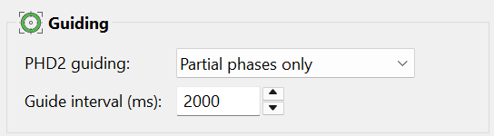
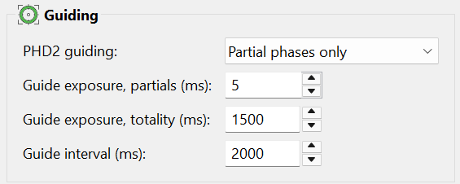
- No guiding: tracking only.
- Partial phases only: guides during the ordinary partial phases and pauses through the C2 and C3 contact windows and totality.
- Partial phases and totality: available with a physical guiding camera. It guides during the ordinary partial phases and inside totality, but still pauses through the thin crescent and diamond ring phases around C2 and C3.
- Guide interval (ms):
- The start-to-start time between guide frames: how often PHD2 samples the guide image and can issue a
correction. The allowed range is 500 to 6000 ms (0.5 to 6 seconds), and
2000 to 4000 ms (2 to 4 seconds) is the recommended starting range.
The best value depends on the physical mount and the seeing. Some harmonic-drive mounts need a shorter interval toward the lower end of the range so their periodic motion is corrected promptly. In poor seeing, use a longer interval, commonly above 3000 ms, so PHD2 is less likely to chase rapid image motion caused by the atmosphere. Test the value with the actual mount, guide optics and observing conditions.
The interval applies to both shared-camera and physical-guiding-camera plans. When you apply a changed value in Plan preferences, HelioMaker writes it to every phase. You can subsequently tune an individual phase's Interval (ms): in the Phase editor. Keep the interval longer than that phase's guide exposure.
Focusing (automatic refocus)
Enable Automatically refocus before totality to run a single guarded refocus a few minutes before C2 (requires a motorized focuser). Set Minutes before totality: and a Refocus timeout (s):.
HelioMaker relies on SharpCap Focus Assistant and repeats its last successful solar focus scan. Before enabling this option, use the physical eclipse rig to configure Contrast (Edge) Detection or Fourier Detail Detection, complete at least one successful scan, and manually confirm that SharpCap Refocus returns to sharp focus. Without that saved successful scan, HelioMaker automatic refocus will not work. During the automatic scan, HelioMaker pauses PHD2 guiding corrections to avoid correction-induced jitter and improve focusing accuracy. Planned captures continue, so an image taken while the focuser is moving may be slightly blurred. See Focusing.

The System benchmark test
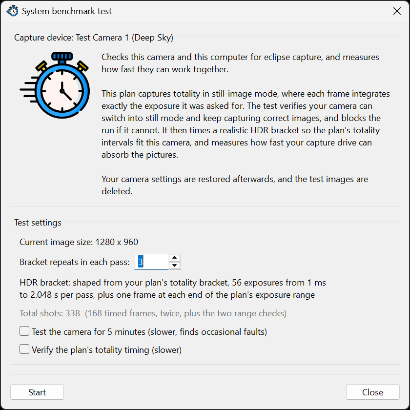
Click System benchmark test... to open the benchmark. It measures your camera's real capture overhead for each frame. Set Bracket repeats in each pass:, then Start. It runs a measure pass, a validate pass, and an extended pass if needed, shows the frame size it measured against, benchmarks your capture drive, and (for a Still mode plan) qualifies still mode on your camera. The summary reports rows such as Camera check, Still capture, Live capture, Capture drive and Plan timing. Two optional deeper checks are worth using before the eclipse: Test the camera for 5 minutes (slower, finds occasional faults), a soak test that surfaces intermittent Still mode failures, and Verify the plan's totality timing (slower). When you're happy, Update & close applies the result to the plan, including the minimum interval for each phase and the disk space estimate.
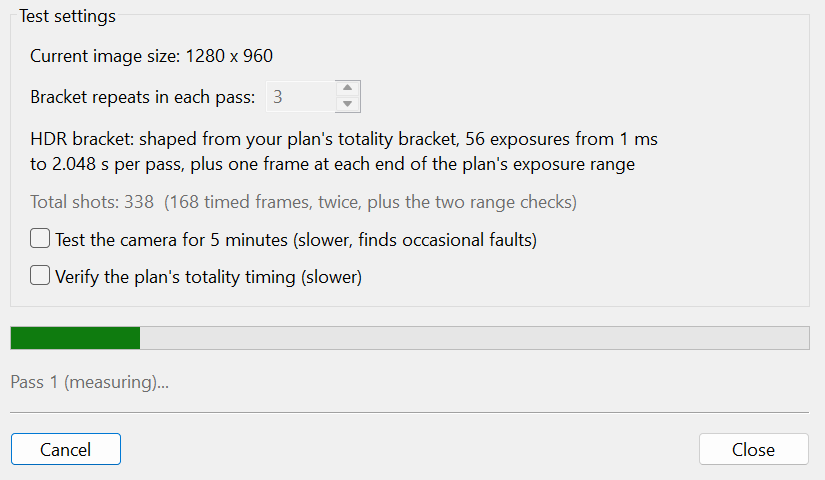
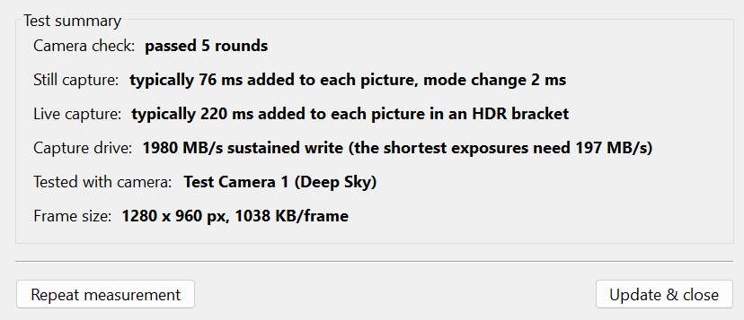
Audio cues
Play audio cues during eclipse enables the spoken prompts during a run; Preview audio cues plays them so you know exactly what you'll hear (it toggles to Stop while playing). Preview them until they are familiar. See The run console. What you hear depends on the eclipse type.
Total eclipses
A set of three prompts that adapt to the mode: awareness, preparation to remove the filter, and preparation to replace it. These prompts control the imaging-scope filters; they never change the separate rule that certified eye protection stays on until totality.
Annular and partial eclipses
Exactly one spoken prompt, about a minute and a half before annularity or before maximum eclipse. It tells you the central phase is approaching and restates that the solar filter stays on.
Because the prompt names the astronomical instant, it fires relative to that instant and not to the start of the central phase. The central phase is a window several minutes wide centred on annularity or maximum, so the cue normally sounds well after that phase has already begun. That is correct: it is announcing the moment of deepest eclipse, not the start of capture.
Preview audio cues plays the chime and that single prompt, which is the entire cue list for the run — the preview rehearses exactly what eclipse day will sound like.
The same checkbox also enables HelioMaker's critical alarm. It may sound during a physical eclipse run if HM detects an unexpected PHD2 or SharpCap error that may require your attention. In some cases HM will attempt to relaunch the affected application, reconnect and resume eclipse imaging automatically. An alarm still means you should read the red/amber console status and confirm whether recovery succeeded. The Silent shutter button does not mute this alarm; clearing Play audio cues during eclipse does.
Critical alarms and the spoken eclipse safety/filter prompts play on independent audio paths. An alarm can overlap a scheduled spoken instruction without stopping or muting it. Cosmetic shutter feedback may pause briefly so the alarm remains clear.
Preview alarm plays the actual 2.638-second critical sound so you can verify its volume before eclipse day. It is a test control and remains available whether or not run-time audio cues are currently selected.
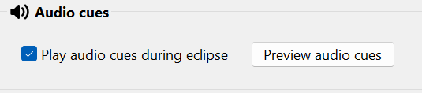